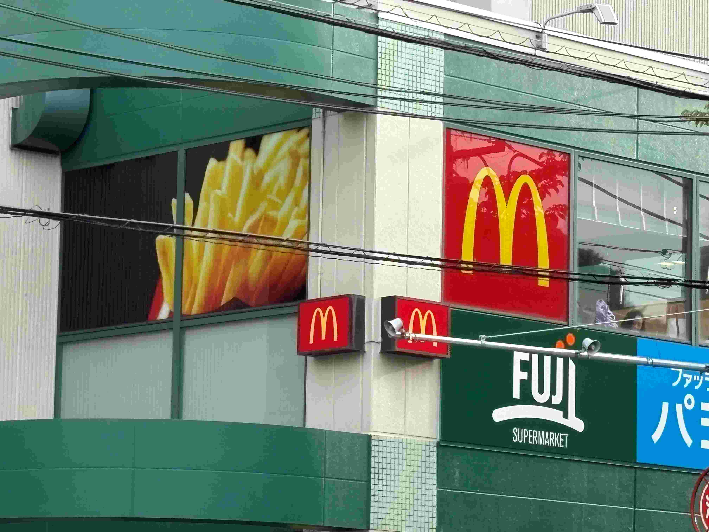
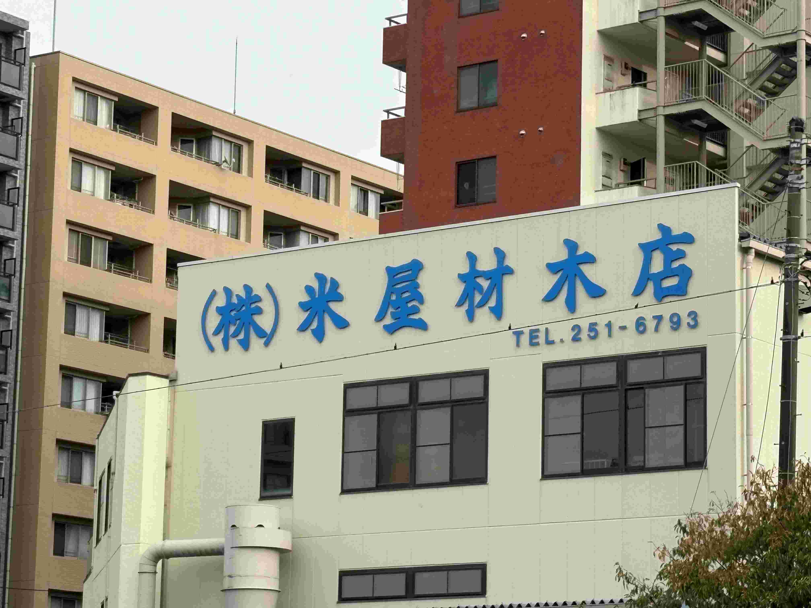
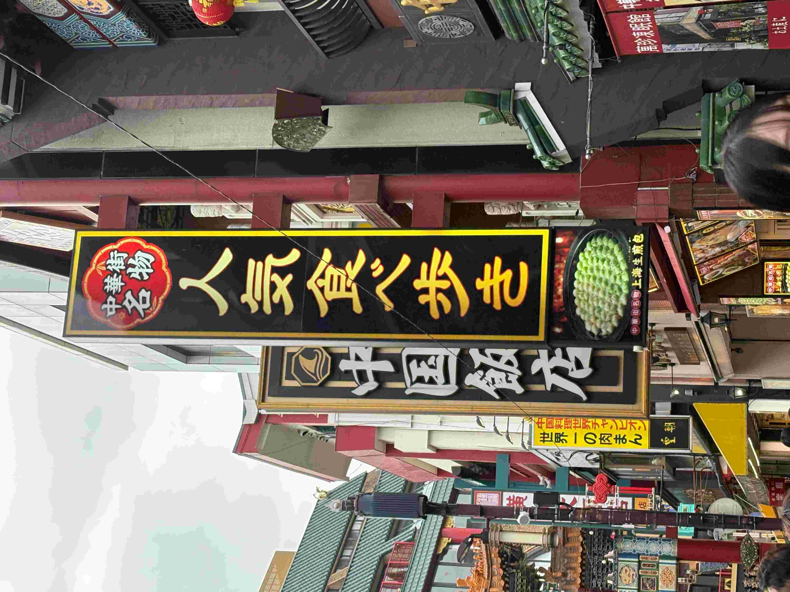

路上観察
1枚目
「マックが誘っている」

皆さん大好きなマクドナルド。食べたことない人はおそらくいないでしょう。
私がなぜこのマクドナルドの写真に注目したか。それはマクドナルドマークの横に「写真」がある点です。
あくまで個人的な考えですが、私は普通のマクドナルドマークを見るよりもセットでポテトの写真があることで購買意欲がそそられ、よりポテトを求めてしまいます。
ここから単に店の看板があるよりもプラスαで写真があることで食べているときの画が想像でき、購買意欲、食欲を向上させる効果があると発見することができました。
2枚目
「何屋さん？」

今回の課題のために近所を歩いていたところ発見しました。みなさんは、どう読んで、そして何屋さんだと思いますか？
私は「こめやざいもくてん」と読み、米屋？材木店？どっち？どっちもやってる二刀流の店？のように考えていました。
結局正解は、「よねやざいもくてん」と読み材木店であるということが調べて分かりました。
もしかしたら自分のように何屋さんなのか分からず調べた人が多くいるかもと考えると、まんまと誘導されたなと感じますし、
ただの偶然と考えるとすごいなと感じる、ある意味色々考察できる面白い看板だなと感じました。
3枚目
「珍しい看板」

中華街に行ったところ見つけました。自分も今回の課題が無ければ何も思わない看板でした。
私が珍しいと思った点は「お店の名前も商品の名前でもない看板」だったところです。
実際に行ってみるとわかりますが中華街には多くの看板があり、その様子が本場の中国らしい風景となっています。
その看板のほとんどが店名や商品名を扱っているのですがこの看板は少し違い「中華街名物・人気食べる歩き」としか書かれていないです。
看板がありすぎてすごい目立つわけではないので人が集まるなど何かしらの効果があるかは不明ですが、
他と違うテイストの看板だったため個人的にはすごい注目したと同時にもしかしたら気づいているのは自分だけかもと考えると少しうれしい気持ちになりました。
課題を通して
今回の課題から身の回りを見渡す楽しさを味わうことができました。もちろん看板について色々考察するのも面白かったですが、
いつも通りだと思っていた光景に新しい発見ができたことを嬉しく感じました。
また周りを見渡せば面白い世界が意外と転がっているのだなということも同時に感じることができました。